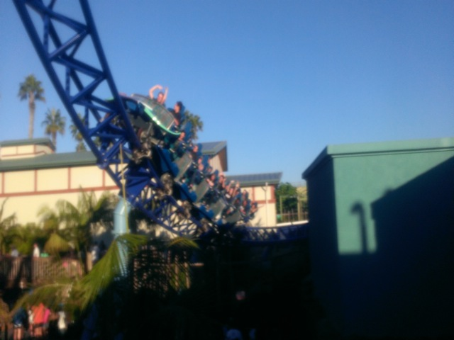
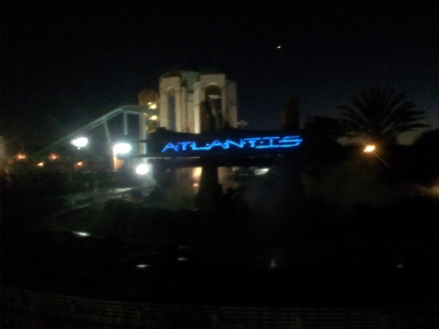
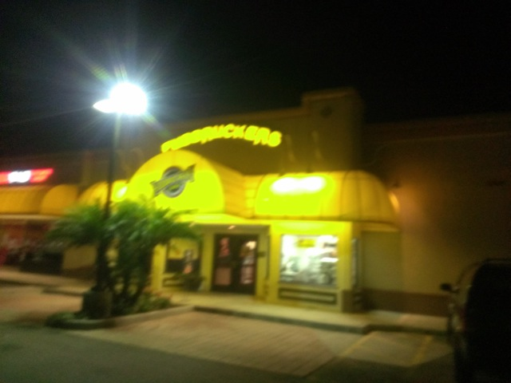

| |
Tough Mudder/Sea World 2013
All right. So today was the day of the Tough Mudder. Aside from a few random 5Ks that I did at last minute without any prior training before, this was the first race I did since High School. I signed up for the Tough Mudder way back in April since it was half price back then and that was already expensive. Plus having a race and something to run for actually got me running again. And yeah. This is definetly a much different race than what I had done as before this, all my races were 3.1 miles. This was 10.8 miles. Plus this was an obstacle course run complete with electric shocks, ice water, tunnel crawling, monkey bars, cliff jumping, and of course, tons and tons of mud. (Oh, and sorry all the photos are covered with watermarks. They're all from MarathonPhoto, as if I had to tell you that. I'm not a fan of all the watermarks either, but I don't want to pay $70.)
 "What rolls down stairs. Alone or in pairs. Rolls over your neighbors dog."
"What rolls down stairs. Alone or in pairs. Rolls over your neighbors dog."
"Ah Crap!! There goes my shoe!!"
Hmm. It's not hurting as bad as I was expecting (Just wait til tomorrow).
"Phh. You can't hurt me electricity!!! Nothing can hurt me!!!"
I ended up finishing at a time of about 2 hours and 20 minutes. And the average time is about 2:45, so my time of 2:20 was definetly better than I expected. It definetly helps that I did hill training at Arroyo Verde and was able to pass a bunch of people on Mt. Everest. I gotta do another Tough Mudder, or a Spartan Race, or just a half-marathon sometime soon cause this was AWESOME!!!!! =D

All right. What to do after a Tough Mudder? What to do? Oh I know!! Lets go to Sea World and get lots of rides on Manta!!!
 Don't underestimate this ride. It may be small, but it packs more of a punch than most of California's coasters. =)
Don't underestimate this ride. It may be small, but it packs more of a punch than most of California's coasters. =)
Love the ceiling art on Manta's station.
"MANTA GOOD!!! MANTA GOOD!!! MANTA GOOD!!!!!"
(Photo by Cody Kempema)
 Flamingos are pink because they eat shrimp. What happens if they eat Skittles?
Flamingos are pink because they eat shrimp. What happens if they eat Skittles?
The Sea World parks have animals? Oh yeah. I kind of forgot after visiting Sea World San Antonio this summer.
"Take a shower you guys. I'm a fish and even I know that that's disgusting."
 "Hmm. Chocolate covered humans. To eat or to not eat?"
"Hmm. Chocolate covered humans. To eat or to not eat?"
"Come on you guys!!! Why are you all celebrating Christmas now!!? It's November for crying out loud!!! Wait a minute, this November has been horrible and I want it to end ASAP. Bring on all the Christmas stuff!!!"
 I really appreciate seeing the Beluga Whales a lot more without having to ride that crappy simulator, Wild Arctic.
I really appreciate seeing the Beluga Whales a lot more without having to ride that crappy simulator, Wild Arctic.
"Hows it going guys. I'm a stingray. Gimme some fish."
Ok. We saw this killer whale in the exact same spot doing the exact same thing when we were here last year. Coincidence?

I noticed that Journey to Atlantis got a new soundtrack since last time we were. Gotta admit. It's definetly an improvement.

And after running nearly 11 miles through several obstacles, that builds up an appetite for BUFFALO BURGERS!!! Today was awesome and I will definetly be coming back to Sea World soon as well as running some big race hopefully soon as well.
Home
|